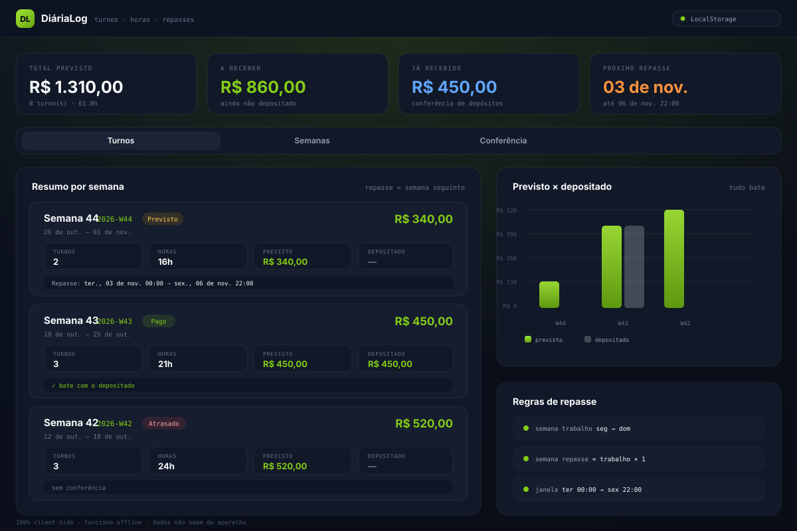
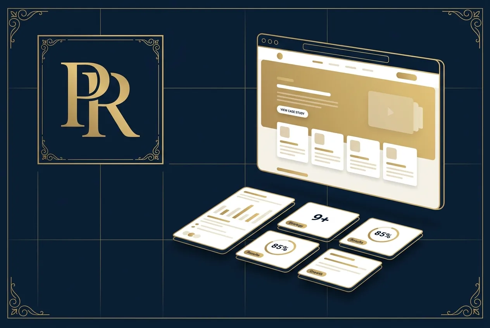
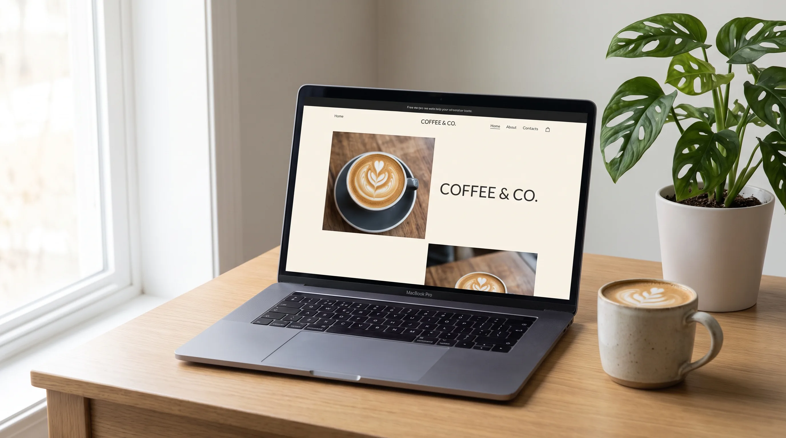
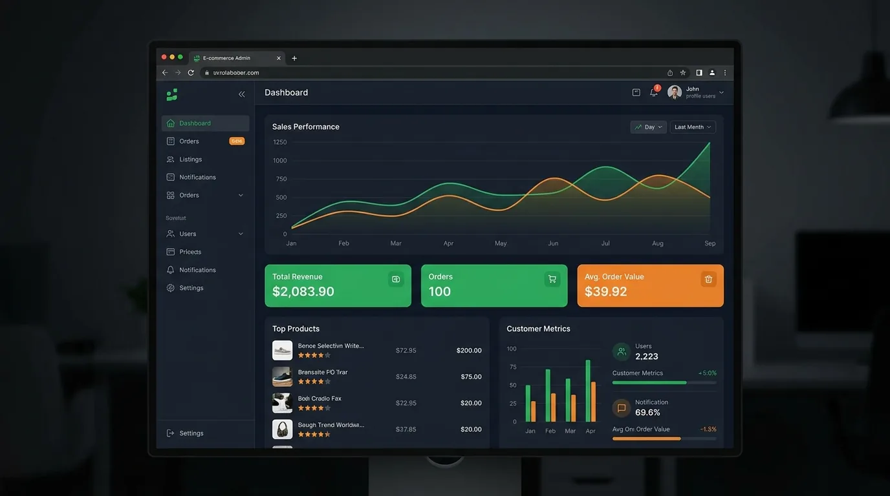
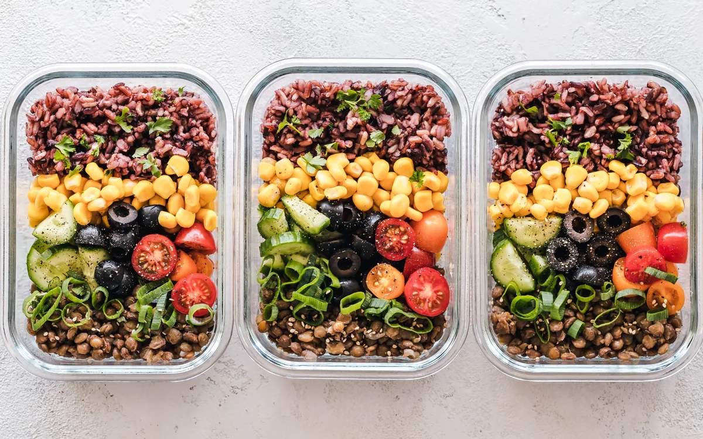
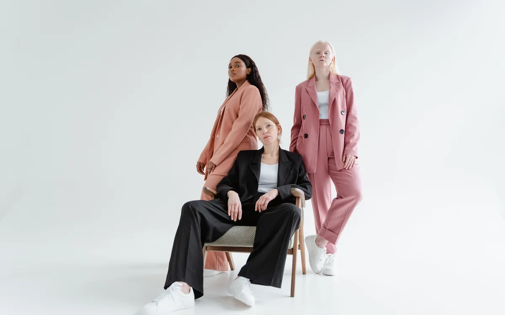
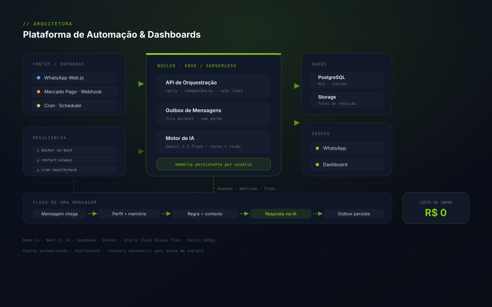

Do zero ao ar
Não entrego repositório, entrego produto rodando. Arquitetura, código, deploy, operação e melhoria contínua — do MVP ao usuário pagante.
Especialista em transformar lógicas complexas e rotinas de logística — como as da Amazon e Shopee — em aplicações web elegantes, performáticas e intuitivas. Do modelo de IA ao deploy em produção.
Wesley Carvalho
Engenheiro de Software Full Stack
IA aplicada · Automação · Infra
Construir produtos digitais que misturam IA, automação e gente real é o que me move. Hoje o projeto principal é o Fity — um SaaS de fitness que entrega um personal trainer conversacional direto no WhatsApp. Antes disso eu vinha de suporte técnico e análise de sistemas, onde aprendi a traduzir problema de negócio em solução técnica — e a fazer funcionar com o que tinha, não com o que eu queria ter.
Quando decidi construir um produto, levei esse mesmo pragmatismo: cortei feature que ninguém pediu, automatizei o que dava pra automatizar e fiz deploy antes de fazer curso.
Não entrego repositório, entrego produto rodando. Arquitetura, código, deploy, operação e melhoria contínua — do MVP ao usuário pagante.
Modelo de linguagem sozinho não resolve nada. No Fity, memória persistente, regras de plano, retry e fallback humano convivem no mesmo fluxo.
Oracle Always Free, Docker e Vercel Hobby. Custo zero de infra, com auto-restart em três camadas e recuperação automática depois de queda de energia.
Stack moderna e battle-tested. Cada categoria abaixo já rodou em produção — não é lista de curso, é lista de deploy.
App Router, Server Components, Edge Functions e renderização híbrida.
Tipagem estrita de ponta a ponta, do schema ao componente.
Design system via tokens, build otimizado e consistência visual.
Semântica, foco visível, contraste e performance de render.
Client state, cache de servidor e formulários com validação em tempo real.
Estados de loading, feedback e movimento com propósito.
// 01
Copy persuasiva, design responsivo, CTA de WhatsApp, SEO local e horário dinâmico.
// 02
Da ideia ao app em produção: stack moderna, banco pronto pra escalar e deploy automatizado.
// 03
Bots que respondem, vendem e encantam. Integração com LLM, memória e retry inteligente.
// 04
Recorrência, PIX, cartão, webhook, split e antifraude sem dor de cabeça.
// 05
Docker, cron, healthcheck, auto-restart e plano de recuperação para quando a energia cai.
// 06
Validar antes de construir. Uma conversa estratégica pra evitar R$ 50 mil em código que ninguém usa.
Do produto próprio ao projeto entregue para cliente. Todos com código, deploy e decisão técnica documentada.
Gestão de demandas & logística · Amazon & Shopee
Web app para controle autônomo de escalas e recebíveis de diaristas logísticos: registra o dia trabalhado, o valor a receber e a janela de repasse bancário. Calcula automaticamente turnos noturnos com virada de meia-noite, consolida a semana por ISO week e confronta o previsto com o valor efetivamente depositado — divisível por zero no que importa.

ISO
semana ISO
24h
turno noturno
R$ 0
custo de infra
SaaS que entrega plano de treino e alimentação todo dia no Zap. Onboarding conversacional, memória persistente por usuário, análise de refeição por foto, assinatura recorrente e briefing diário às 7h.

Portfólio sêniorPortfólio executivo com 9+ áreas de expertise, timeline vertical, preview social otimizado para LinkedIn e Schema.org completo. Design premium com paleta navy e dourado.
Landing page de cafeteria e casa cultural em Fortaleza. Cardápio, mapa, horário dinâmico, galeria, avaliação e CTA de WhatsApp — com identidade visual turquesa que vende o conceito.

Cliente · confeitariaCardápio completo de confeitaria com catálogo, depoimentos e integração de iFood. Design literário em paleta areia e oceano, construído para converter tráfego orgânico em pedido.

Template white-labelPainel administrativo pronto pra customizar em qualquer nicho: vendas, top produtos, métricas de cliente e gestão de pedidos. Reutilizável como base de novos projetos.

Demo autoralExperiência de alimentação saudável com fotografia real, cardápio filtrável, sacola interativa, depoimentos e narrativa de marca.

Demo autoralE-commerce conceitual com fotografia editorial, coleção responsiva, sacola interativa e narrativa de marca independente.

Sistema corporativoMotor de automação com fila de mensagens, agendadores, painel operacional e observabilidade — a espinha dorsal que roda o Fity e serve de base para novos produtos.
A trajetória conta uma coisa: resolver problema de ponta a ponta. Do incidente do usuário até o deploy do sistema que resolve a causa.
Fortaleza, CE · remoto
Resultado: MVP em produção atendendo usuário pagante, com recuperação automática após queda de energia.
Fortaleza, CE
Portfólios, landing pages e e-commerce
Sistemas de Informação
Base em lógica, modelagem de dados e redes — que virou mão na obra no produto e na infra.
Me conta o problema, não a solução. Se eu puder resolver, eu resolvo. Se não puder, te indico alguém que resolve — honestidade radical é mais barata que contrato assinado.
Resposta em até 4h úteis · disponibilidade para projetos a partir de Q4 2026